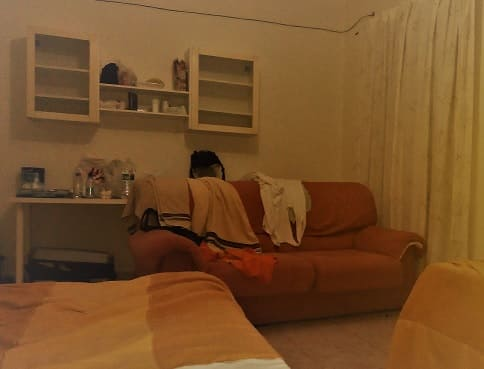
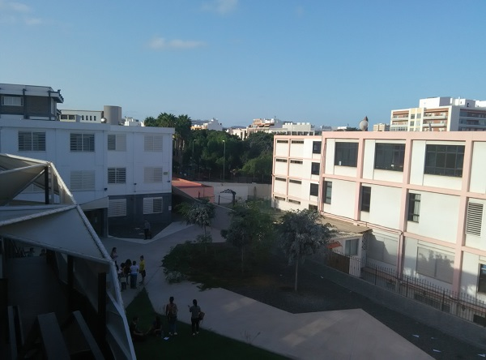
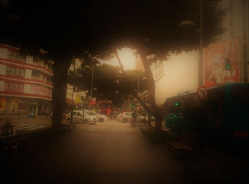
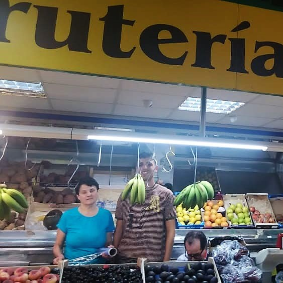
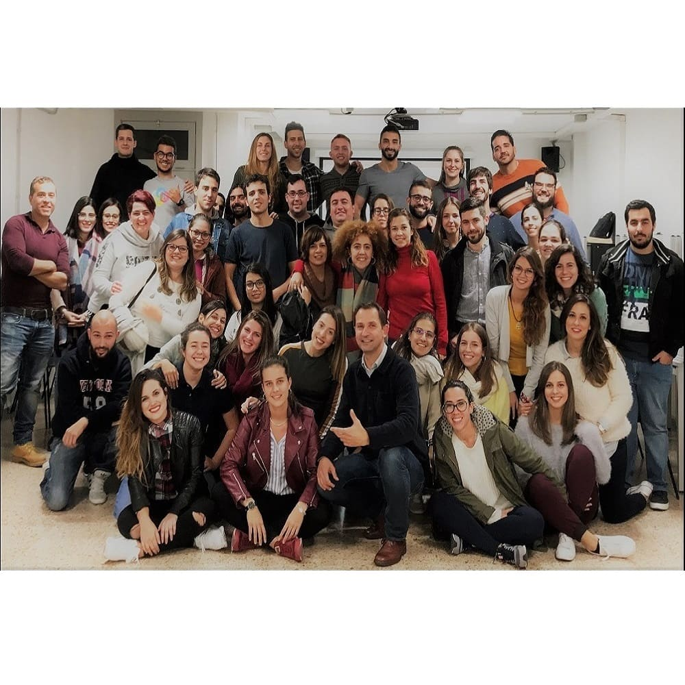
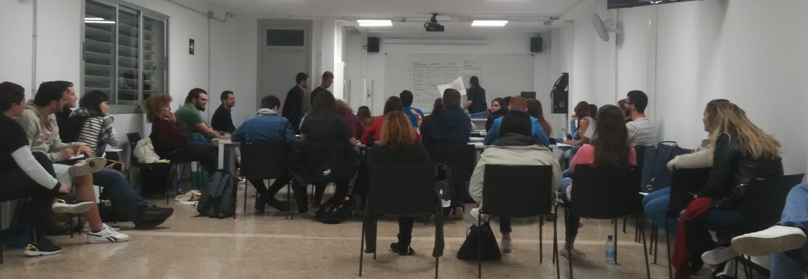
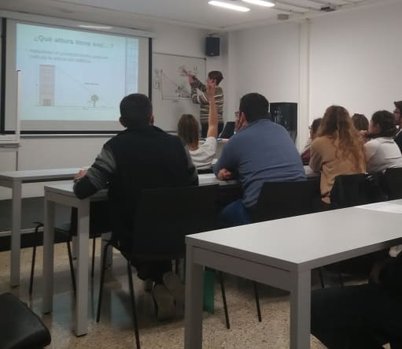

A finales de Septiembre de 2017 llegue a Canarias a estudiar el Master que da acceso a ser profesor e impartir docencia en el estado español.
Si bien los objetivos eran variados ya que a parte de realizar el master tenía planes más ambiciosos que no pude realizar debido a una problemática en la espalda. Ya conociendo estas tierras y los diferentes barrios de Las Palmas comence alquilando a través del ya famoso portal de apartamentos AirBnb. Mi residencia se encontraba en el barrio de Tomas Morales, muy cerca de la facultad de Educación de la Universidad de Las Palmas de Gran Canaria, a escasos 50 metros del Obelisco. Por 20 euros diarios una gran habitación con dos camas y un sofa y acceso a los servicios de la casa.
Hacía un calor insoportable, de esos que se pegan a la camisa pero yo no tengo nada en contra del calor.
A continuación muestro unas fotos de la facultad.
Me resulto gratamente el buen ambiente que se respiraba en aquel campus y es que ya es conocido que en magisterio se vive bien.
Además al estar en la ciudad y cerca del mar el tiempo era excelente salvo el bochorno algo excesivo para un mes como octubre como comentaba antes. Lo que me sorprendio fue contemplar que las salas de la facultad no contaban más con dos ventiladores pequeños por aulas. Aulas en las que nos encontrabamos cerca de 50 alumnos. En alguna otra llegaban a cohabitar 70 estudiantes.
Era vistoso el gran uso de abanicos por parte de las estudiantes y eso que eran canarios y estaban acostumbrados a esos vaivenes de la temperatura.
El barrio de Tomas Morales me gusto bastante, un barrio de clase media muy tranquilo y el campus de Obelisco también.


Al final buscando casa por diferentes portales conseguí una en la Avenida Jose Mesa y López, la calle más imporante de la capital que conecta la GC1 con la GC2, las 2 autovías más importantes de la isla, además de conectar todas las calles que parten del barrio de las Canteras, la playa más importante y larga de la capital.
Mi casa estaba además cerca de la plaza Santa Catalina donde hay multitud de sitios de ocio nocturno. Además estaba cerca del mercado central donde conseguía la comida ya de por si barata por estar en Canarias todavía más barata.
En concreto iba a la planta de arriba a la fruteria de Jose, cuyos precios son bastante buenos sobre todo de bienes básicos en Canarias como puedan ser plátanos, patatas, tomates, limones, cebollas y lechugas. Luego ciertas frutas estan bastante baratas en determinadas ocasiones como pueden ser papayos, aguacates, o setas dependiendo de la epoca.

Si bien esos primeros meses hasta navidades no pude disfrutar de la isla ya que tuve una lesión importante en la espalda de la que no me recuperaría hasta Abril casi del año siguiente.
Aquí muestro una foto de mi clase y de uno de los profesores mejores que he tenido, ya no sólo de este master si no de mi vida educativa. Sabía muy bien como conectar con el alumnado y cuando decir las cosas y como decirlas. También es cierto que tenía ventaja ya que es psicológo y tiene mucha experiencia en este campo.
Con la ventaja de esas clases pude conectar muchos conceptos que ya tenía aprendidos pero que quizás no sabía donde colocarlos y hacerlos más tángibles.
Conceptos que no sólo pueden aplicarse al arte de explicar y enseñar, si no que pueden aplicarse a otros campos como puede ser la tecnología o incluso las finanzas que es uno de los temas que llevo intentado comprender hace poco tiempo. La mayoría de las decisiones siempre atienden a razonamientos lógicos pero también tienen en cuenta un contexto que lleva acoplados emociones o sensaciones en el momento que se realizan. En un mundo donde las matemáticas juegan un papel decisivo en las operaciones financieras, venta y compra de activos financieros, adquisicion de contratos, subida de tipos de interes también gozan de esa materia que no sólo los robots pueden calcular con simples algoritmos.
La euforia y el miedo son emociones que no se pueden medir pero que juegan un papel imporante en los momentos de volatilidad de los valores y que hay que tenerlos en cuenta a la hora de realizar operaciones importantes. Esto cualquiera de los brokeres actuales lo saben pero existen herramientas para que no afecten finalmente en las decisiones clave o atenuen ese sentimiento ganador para disminuir el riesgo. Esto ya lo explicare en mi blog de economía cuando sea menester.
Aqui dejo fotografías de algunas clases de obelisco, una clase muy variopinta con gente de diferentes ámbitos y especialidades, como pueda ser humanidades, filología, economía, social, ingeniería, sanidad o deportes.


Gran Canaria cuenta con numerosos parajes para poder visitar, tanto de montaña como de playa o de bosques. En mis casi dos años de estancia en Gran Canaria he podido caminar por toda la isla y conocer casi todos los rincones (quizás con la excepción del parque de Tamadaba).
Aqui muestro un resumen de fotografías de los sitios que más destacan. Para ver más visitar la sección de Canarias.
© 2016 - All Rights Reserved - Diseñada por Sergio López Martínez
![[Valid RSS]](https://www.feedvalidator.org/images/valid-rss-rogers.png "Validate my RSS feed")